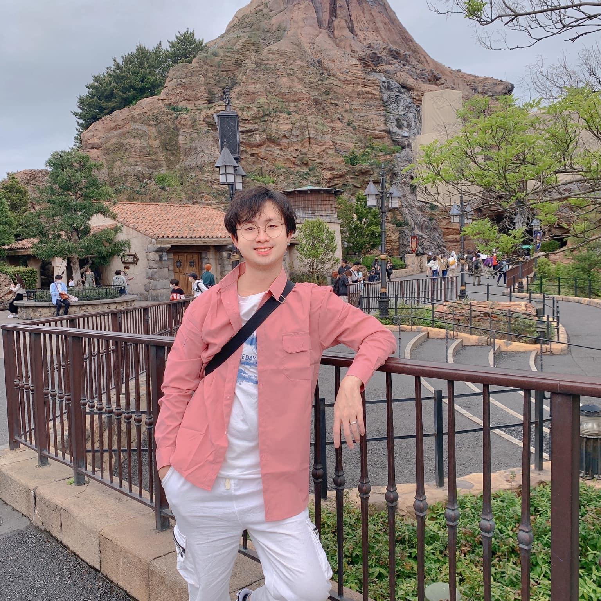

Summary
I'm infractrue engineer for KCME on 2 year. And now, i decide to change career to web developer which i love to do. Let's take a look that what i can.
Digital Hollywood University (2018/4 ~ 2022/3)
New Japan Academy (2016/4 ~ 2018/3)
Da Nang University of Science and Technology (2014/9 ~ 2015/9)
NGO QUYEN High Scholl (2011/9 ~ 2014/5)
Work Experience
- Docomo NFV
2022 November - 2023 February
- construction
- operation
- maintenance
- Softbank - VoLTE
2023 March - 2023 May
- construction
- test
- Softbank - DR ENM
2023 June - 2023 September
- construction
- test
- Softbank - OSS-RC Replacement
2023 October - 2024 February
- produres creating
- test
Skill
-
Linux：★★★
-
HTML, CSS:★★
-
Javascript:★★
Certification
- Japanese Language Proficiency Test N1
- Oracle java silver
- Cisco CCNA
- Lpic2
- AWS Certified Cloud Practitioner
- TOEIC 650point
Others